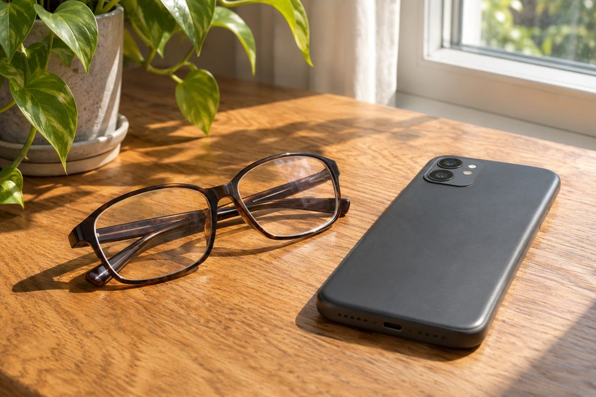

Electronics / EXPLAINED
Samsung’s intelligent eyewear reaches US stores December 10
Preorders began November 12. The nine-hour glasses rating and 72-hour case-assisted rating describe different use.

Samsung Electronics America opened preorders on November 12 and set US general availability for December 10. Warby Parker starts at $395, while Gentle Monster ranges from $449 to $489. The announcement adds prices and timing to eyewear shown at July’s Unpacked. It does not establish a Korean launch or local price.
Samsung worked with Google on Gemini and with two eyewear brands on frames. The 30 designs include combinations of shape, color and lens options. They do not represent 30 different electronic systems. The roughly 41 g specification refers to a reference configuration with standard lenses. Prescription lenses can change weight and fit.
Hardware includes a 12-megapixel HDR camera, open-ear speakers and four microphones. Samsung gives asking about visible objects and listening to directions as use cases. An open-ear design leaves the ear canal exposed to ambient sound. The announcement does not establish audibility in traffic or how much sound others can hear.
The Snapdragon AR1 Gen 1 shares some processing with a connected phone. Check the phone and OS together. Samsung lists specified Galaxy models on One UI 9 or later, Pixel 7 and later with the specified Android 17 update, and iPhone 13 and later on iOS 26.6 or newer with at least 6 GB of RAM. Bixby requires a Galaxy phone.
Up to nine hours refers to one glasses charge and up to 72 hours includes a charged case. The latter is not continuous wear without recharging. Network, features and charging patterns affect runtime. Brief voice queries and lengthy camera use need not draw the same power.
Compatibility lists identify devices that can connect. Individual features can also need particular apps, accounts or networking. Samsung’s whiteboard example involves capture and then processing and saving into Samsung Notes. Check the phone’s apps and where results are stored. Being on the compatibility list does not establish identical features across operating systems.
Samsung says an external LED signals camera use and capture is disabled if the indicator is covered or faulty. Activation requires verification of age 18 or older. Recording permission still depends on the setting. We see phone compatibility, lenses and location as practical limits on daily use. Delivery dates and regional service coverage require checking at purchase.